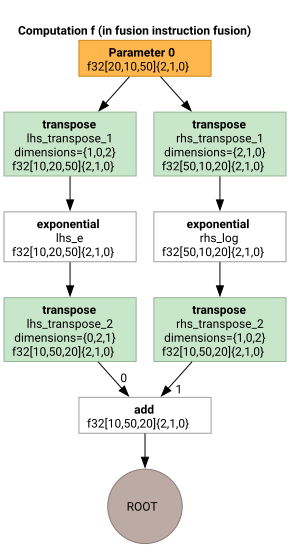
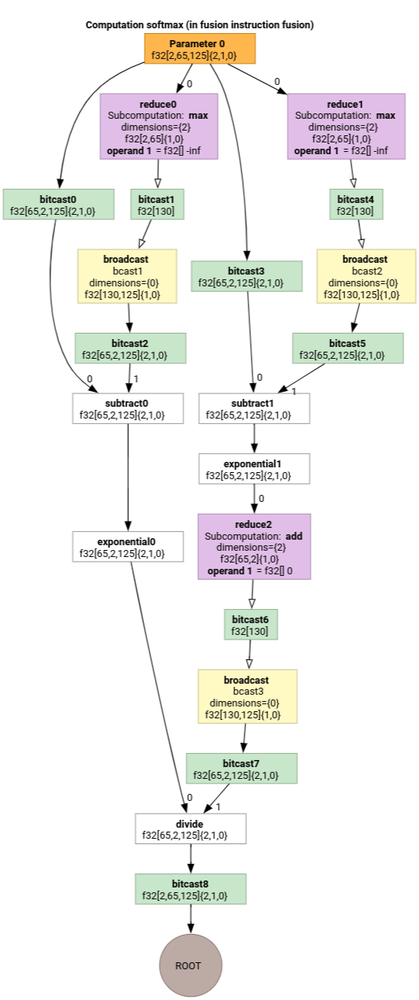

Indexing Analysis#
HLO indexing analysis is a dataflow analysis that describes how elements of one tensor relate to another via “indexing maps”. For example, how indices of an HLO instruction output map to indices of HLO instruction operands.
Example#
For a broadcast from tensor<20xf32> to tensor<10x20x30xf32>
p0 = f32[20] parameter(0)
bc0 = f32[10, 20, 30] broadcast(p0), dimensions={1}
the indexing map from the output to input is (i, j, k) -> (j) for i in [0, 10], j in [0, 20] and k in [0, 30].
Motivation#
XLA uses several bespoke solutions to reason about coalescing, operand utilization, and tiling schemes (more details below). The goal of indexing analysis is providing a reusable component for such use cases. Indexing analysis is built on MLIR’s Affine Map infrastructure and adds HLO semantics.
Coalescing#
Reasoning about memory coalescing becomes feasible for non-trivial cases, when we know what elements/slices of the inputs are read to compute an element of the output.
Operand Utilization#
Operand utilization in XLA indicates how much each input of the instruction is used assuming its output is fully used. Currently, utilization is also not computed for a generic case. Indexing analysis allows us to compute utilization precisely.
Tiling#
A tile/slice is hyper-rectangular subset of a tensor parameterized by offsets, sizes and strides. Tile propagation is a way to compute tile parameters of the producer/consumer of the op using the tiling parameters of the op itself. There is already a library that does it for softmax and dot. Tile propagation can be made more generic and robust if it is expressed via indexing maps.
Indexing map#
An indexing map is a combination of
a symbolically expressed function that maps every element of one tensor
Ato ranges of elements in tensorB;constraints on valid function arguments, including function’s domain.
Function arguments are split into 3 categories to better communicate their nature:
dimension variables of the tensor
Aor a GPU grid we are mapping from; values are known statically. Index elements are also called dimension variables.range variables. They define a one-to-many mapping and specify a set of elements in
Bused to compute a single value ofA; values are known statically. The contracting dimension of a matrix multiplication is an example of a range variable.runtime variables that are only known at during execution. For example, indices argument of gather operation.
Result of the function is an index of the target B tensor.
In short, an indexing function from tensor A to tensor B for operation x
is
map_ab(index in A, range variables, runtime variables) -> index in B.
To better separate the types of mapping arguments we write them as:
map_ab(index in A)[range variables]{runtime variables} -> (index in B)
For example, let’s look at the indexing maps for the reduce operation
f32[4, 8] out = reduce(f32[2, 4, 8, 16] in, 0), dimensions={0,3}:
to map elements of
intooutour function can be expressed as(d0, d1, d2, d3) -> (d1, d2). The constraints of the variablesd0 in [0, 1], d1 in [0, 3], d2 in [0, 7], d3 in [0, 15]are defined by the shape ofin.To map elements of
outtoin:outhas only two dimensions, and reduction introduces two range variables that cover reducing dimensions. Thus the mapping function is(d0, d1)[s0, s1] -> (s0, d0, d1, s1), where(d0, d1)is index ofout.s0,s1are ranges defined by operation’s semantics and span dimension 0 and 3 of theintensor. The constraints ared0 in [0, 3], d1 in [0, 7], s0 in [0,1], s1 in [0, 15].
It’s important to note that in most scenarios we are interested in mapping from the elements of the output. For computation
C = op1(A, B)
E = op2(C, D)
we can talk about “indexing of B” meaning “mapping of elements of E into
the elements of B”. This might be counter-intuitive compared to other types of
data-flow analysis that work from input toward outputs.
Constraints on variables enable optimization opportunities and help with code generation. In the documentation and implementation constraints are also referred to as domain as they define all valid combinations or argument values of the mapping function. For many operation, constraints simply describe the dimensions of tensors but for some operations they might be more complicated; see examples below.
By having functions and argument constraints expressed symbolically and being able to combine functions and constraints we can compute a compact indexing mapping for an arbitrary large computation (fusion).
Expressiveness of symbolic function and constraints is a balance between implementation complexity and optimization gains we get from having a more precise representation. For some HLO operations we capture access patterns only approximately.
Implementation#
Since we want to minimize recomputation, we need a library for symbolic computations. XLA already depends on MLIR, so we use mlir::AffineMap instead of writing a yet-another symbolic arithmetic library.
A typical AffineMap looks like
(d0)[s0, s1] -> (s0 + 5, d0 * 2, s1 * 3 + 50)
AffineMap has two types of parameters: dimensions and symbols.
Dimensions correspond to the dimension variables d; symbols correspond to
the range variables r and runtime variables rt. AffineMap does not contain
any metadata about constraints of the parameters, so we have to provide them
separately.
struct Interval {
int64_t lower;
int64_t upper;
};
class IndexingMap {
// Variable represents dimension, range or runtime variable.
struct Variable {
Interval bounds;
// Name of the variable is used for nicer printing.
std::string name = "";
};
mlir::AffineMap affine_map_;
// DimVars represent dimensions of a tensor or of a GPU grid.
std::vector<Variable> dim_vars_;
// RangeVars represent ranges of values, e.g. to compute a single element of
// the reduction's result we need a range of values from the input tensor.
std::vector<Variable> range_vars_;
// RTVars represent runtime values, e.g. a dynamic offset in
// HLO dynamic-update-slice op.
std::vector<Variable> rt_vars_;
llvm::DenseMap<mlir::AffineExpr, Interval> constraints_;
};
dim_vars_ encode the inclusive box constraints for the dimension
variables d of the indexing map, which usually coincide with the
shape of the output tensor for ops like transpose, reduce, elementwise, dot, but
there are some exceptions like
HloConcatenateInstruction.
range_vars_ all values that range variables s take. The range variables
are needed when multiple values are necessary to compute a single element of the
tensor we are mapping from, e.g. for output->input indexing map of reductions or
input->output map for broadcasts.
rt_vars_ encode the feasible values in runtime. For example, the offset is
dynamic for a 1D HloDynamicSliceInstruction. The corresponding RTVar will
have feasible values between 0 and tensor_size - slice_size - 1.
constraints_ capture relations between values in form
<expression> in <range>, e.g. d0 + s0 in [0, 20]. Together with
Variable.bounds they define the “domain” of indexing function.
Let’s study-by-example to understand what’s all of the above actually means.
Indexing Maps for Unfused Ops#
Elementwise#
For elementwise ops the indexing map is an identity.
p0 = f32[10, 20] parameter(0)
p1 = f32[10, 20] parameter(1)
output = f32[10, 20] add(p0, p1)
The output to input map output -> p0:
(d0, d1) -> (d0, d1),
domain:
d0 in [0, 9],
d1 in [0, 19]
The input to output map p0 -> output:
(d0, d1) -> (d0, d1),
domain:
d0 in [0, 9],
d1 in [0, 19]
Broadcast#
Broadcasting means that some of the dimensions will be removed when we map output to input and added when we map input to output.
p0 = f32[20] parameter(0)
bc0 = f32[10, 20, 30] broadcast(p0), dimensions={1}
The output to input map:
(d0, d1, d2) -> (d1),
domain:
d0 in [0, 9],
d1 in [0, 19],
d2 in [0, 29]
The input to output map:
(d0)[s0, s1] -> (s0, d0, s1),
domain:
d0 in [0, 19],
s0 in [0, 9],
s1 in [0, 29]
Note that now we have range variables s on the right side for the
input-to-output mapping. Those are the symbols that represent ranges of values.
For example, in this particular case every element of input with index d0 is
mapped to a 10x1x30 slice of the output.
Iota#
Iota has no input tensor operand, so there is no input index arguments.
iota = f32[2,4] iota(), dimensions={1}
Output to input map:
(d0, d1) -> ()
domain:
d0 in [0, 1]
d1 in [0, 3]
Input to output map:
()[s0, s1] -> (s0, s1)
domain:
s0 in [0, 1]
s1 in [0, 3]
DynamicSlice#
DynamicSlice has offsets known only at runtime.
src = s32[2, 2, 258] parameter(0)
of1 = s32[] parameter(1)
of2 = s32[] parameter(2)
of3 = s32[] parameter(3)
ds = s32[1, 2, 32] dynamic-slice(src, of1, of2, of3), dynamic_slice_sizes={1, 2, 32}
The output to input map from ds to src:
(d0, d1, d2){rt0, rt1, rt2} -> (d0 + rt0, d1 + rt1, d2 + rt2),
domain:
d0 in [0, 0],
d1 in [0, 1],
d2 in [0, 31],
rt0 in [0, 1],
rt1 in [0, 0],
rt2 in [0, 226]
Note that now we have rt on the right side for the input-to-output mapping.
Those are the symbols that represent runtime values. For example, in this
particular case for every element of the output with indices d0, d1, d2 we
access slice offsets of1, of2 and of3 to compute the index of the input.
The intervals for the runtime variables are derived by assuming that the entire
slice stays in bounds.
The output to input map for of1, of2 and of3:
(d0, d1, d2) -> (),
domain:
d0 in [0, 0],
d1 in [0, 1],
d2 in [0, 31]
DynamicUpdateSlice#
src = s32[20,30] parameter(0)
upd = s32[5,10] parameter(1)
of1 = s32[] parameter(2)
of2 = s32[] parameter(3)
dus = s32[20,30] dynamic-update-slice(
s32[20,30] src, s32[5,10] upd, s32[] of1, s32[] of2)
The output to input map for src is trivial. It can be made more precise by
restricting the domain to the not-updated indices, but right now indexing maps
do not support inequality constraints.
(d0, d1) -> (d0, d1),
domain:
d0 in [0, 19],
d1 in [0, 29]
The output to input map for upd:
(d0, d1){rt0, rt1} -> (d0 - rt0, d1 - rt1),
domain:
d0 in [0, 19],
d1 in [0, 29],
rt0 in [0, 15],
rt1 in [0, 20]
Note that now we have rt0 and rt1 that represent runtime values. In
this particular case for every element of the output with indices d0, d1 we
access slice offsets of1 and of2 to compute the index of the input. The
intervals for the runtime variables are derived by assuming that the entire
slice stays in bounds.
The output to input map for of1 and of2:
(d0, d1) -> (),
domain:
d0 in [0, 19],
d1 in [0, 29]
Gather#
Only the simplified gather is supported. See gather_simplifier.h.
operand = f32[33,76,70] parameter(0)
indices = s32[1806,2] parameter(1)
gather = f32[1806,7,8,4] gather(operand, indices),
offset_dims={1,2,3},
collapsed_slice_dims={},
start_index_map={0,1},
index_vector_dim=1,
slice_sizes={7,8,4}
The output to input map for operand:
(d0, d1, d2, d3){rt0, rt1} -> (d1 + rt0, d2 + rt1, d3),
domain:
d0 in [0, 1805],
d1 in [0, 6],
d2 in [0, 7],
d3 in [0, 3],
rt0 in [0, 26],
rt1 in [0, 68]
Note that now we have rt symbols that represent runtime values.
The output to input map for indices:
(d0, d1, d2, d3)[s0] -> (d0, s0),
domain:
d0 in [0, 1805],
d1 in [0, 6],
d2 in [0, 7],
d3 in [0, 3],
s0 in [0, 1]
The range variable s0 shows that we need the entire row (d0, *) of the
indices tensor to compute an element of the output.
Transpose#
Indexing map for transpose is a permutation of input/output dimensions.
p0 = f32[3, 12288, 6, 128] parameter(0)
transpose = f32[3, 6, 128, 12288] transpose(p0), dimensions={0, 2, 3, 1}
The output to input map:
(d0, d1, d2, d3) -> (d0, d3, d1, d2),
domain:
d0 in [0, 2],
d1 in [0, 5],
d2 in [0, 127],
d3 in [0, 12287],
The input to output map:
(d0, d1, d2, d3) -> (d0, d2, d3, d1),
domain:
d0 in [0, 2],
d1 in [0, 12287],
d2 in [0, 5],
d3 in [0, 127]
Reverse#
Indexing map for reverse changes the reverted dimensions to upper_bound(d_i) - d_i:
p0 = f32[1, 17, 9, 9] parameter(0)
reverse = f32[1, 17, 9, 9] reverse(p0), dimensions={1, 2}
The output to input map:
(d0, d1, d2, d3) -> (d0, -d1 + 16, -d2 + 8, d3),
domain:
d0 in [0, 0],
d1 in [0, 16],
d2 in [0, 8],
d3 in [0, 8]
The input to output map:
(d0, d1, d2, d3) -> (d0, -d1 + 16, -d2 + 8, d3),
domain:
d0 in [0, 0],
d1 in [0, 16],
d2 in [0, 8],
d3 in [0, 8]
(Variadic)Reduce#
Variadic reduction have several inputs and several initial values, the map from output to input adds the reduced dimensions.
p0 = f32[256,10] parameter(0)
p0_init = f32[] constant(-inf)
p1 = s32[256,10] parameter(1)
p1_init = s32[] constant(0)
out = (f32[10], s32[10]) reduce(p0, p1, p0_init, p1_init),
dimensions={0}, to_apply=max
The output to input maps:
out[0]->p0:
(d0)[s0] -> (s0, d0),
domain:
d0 in [0, 9],
s0 in [0, 255]
out[0]->p0_init:
(d0) -> (),
domain:
d0 in [0, 9]
The input to output maps:
p0->out[0]:
(d0, d1) -> (d1),
domain:
d0 in [0, 255],
d1 in [0, 9]
p0_init->out[0]:
()[s0] -> (s0),
domain:
s0 in [0, 9]
Slice#
Indexing from output to input for slice results in a strided indexing map which is valid for every element of the output. Mapping from the input to output is restricted to a strided range of the elements in the input.
p0 = f32[10, 20, 50] parameter(0)
slice = f32[5, 3, 25] slice(f32[10, 20, 50] p0),
slice={[5:10:1], [3:20:7], [0:50:2]}
The output to input map:
(d0, d1, d2) -> (d0 + 5, d1 * 7 + 3, d2 * 2),
domain:
d0 in [0, 4],
d1 in [0, 2],
d2 in [0, 24]
The input to output map:
(d0, d1, d2) -> (d0 - 5, (d1 - 3) floordiv 7, d2 floordiv 2),
domain:
d0 in [5, 9],
d1 in [3, 17],
d2 in [0, 48],
(d1 - 3) mod 7 in [0, 0],
d2 mod 2 in [0, 0]
Reshape#
Reshapes come in different flavors.
Collapse shape#
This is a “linearizing” reshape from N-D to 1D.
p0 = f32[4,8] parameter(0)
reshape = f32[32] reshape(p0)
The output to input map:
(d0) -> (d0 floordiv 8, d0 mod 8),
domain:
d0 in [0, 31]
The input to output map:
(d0, d1) -> (d0 * 8 + d1),
domain:
d0 in [0, 3],
d1 in [0, 7]
Expand shape#
This is an inverse “collapse shape” op, it reshapes a 1D input into N-D output.
p0 = f32[32] parameter(0)
reshape = f32[4, 8] reshape(p0)
The output to input map:
(d0, d1) -> (d0 * 8 + d1),
domain:
d0 in [0, 3],
d1 in [0, 7]
The input to output map:
(d0) -> (d0 floordiv 8, d0 mod 8),
domain:
d0 in [0, 31]
Generic reshape#
These are the reshape ops that cannot be represented as a single expand or collapse shape. They can be only represented as a composition of 2 or more expand or collapse shapes.
Example 1: Linearization-delinearization.#
p0 = f32[4,8] parameter(0)
reshape = f32[2, 4, 4] reshape(p0)
This reshape can be represented as a composition of collapse shape of
tensor<4x8xf32> to tensor<32xf32> and then a shape expansion to
tensor<2x4x4xf32>.
The output to input map:
(d0, d1, d2) -> (d0 * 2 + d1 floordiv 2, d2 + (d1 mod 2) * 4),
domain:
d0 in [0, 1],
d1 in [0, 3],
d2 in [0, 3]
The input to output map:
(d0, d1) -> (d0 floordiv 2, d1 floordiv 4 + (d0 mod 2) * 2, d1 mod 4),
domain:
d0 in [0, 3],
d1 in [0, 7]
Example 2: Expanded and collapsed subshapes#
p0 = f32[4, 8, 12] parameter(0)
reshape = f32[32, 3, 4] reshape(p0)
This reshape can be represented as a composition of two reshapes. The first one
collapses the outermost dimensions tensor<4x8x12xf32> to tensor<32x12xf32>
and the second one expand the innermost dimension tensor<32x12xf32> into
tensor<32x3x4xf32>.
The output to input map:
(d0, d1, d2) -> (d0 floordiv 8, d0 mod 8, d1 * 4 + d2),
domain:
d0 in [0, 31],
d1 in [0, 2]
d2 in [0, 3]
The input to output map:
(d0, d1, d2) -> (d0 * 8 + d1, d2 floordiv 4, d2 mod 4),
domain:
d0 in [0, 3],
d1 in [0, 7],
d2 in [0, 11]
Bitcast#
A bitcast op can be represented as a sequence of transpose-reshape-transpose. Therefore, its indexing maps are just a composition of indexing maps for this sequence.
Concatenate#
Output-to-input mapping for concat is defined for all inputs, but with non-overlapping domains, i.e. only one of the inputs will be used at a time.
p0 = f32[2, 5, 7] parameter(0)
p1 = f32[2, 11, 7] parameter(1)
p2 = f32[2, 17, 7] parameter(2)
ROOT output = f32[2, 33, 7] concatenate(f32[2, 5, 7] p0, f32[2, 11, 7] p1, f32[2, 17, 7] p2), dimensions={1}
The output to inputs maps:
output->p0:
(d0, d1, d2) -> (d0, d1, d2),
domain:
d0 in [0, 1],
d1 in [0, 4],
d2 in [0, 6]
output->p1:
(d0, d1, d2) -> (d0, d1 - 5, d2),
domain:
d0 in [0, 1],
d1 in [5, 15],
d2 in [0, 6]
output->p2:
(d0, d1, d2) -> (d0, d1 - 16, d2),
domain:
d0 in [0, 1],
d1 in [16, 32],
d2 in [0, 6]
The inputs to output maps:
p0->output:
(d0, d1, d2) -> (d0, d1, d2),
domain:
d0 in [0, 1],
d1 in [0, 4],
d2 in [0, 6]
p1->output:
(d0, d1, d2) -> (d0, d1 + 5, d2),
domain:
d0 in [0, 1],
d1 in [0, 10],
d2 in [0, 6]
p2->output:
(d0, d1, d2) -> (d0, d1 + 16, d2),
domain:
d0 in [0, 1],
d1 in [0, 16],
d2 in [0, 6]
Dot#
Indexing maps for dot are very similar to the ones of reduce.
p0 = f32[4, 128, 256] parameter(0)
p1 = f32[4, 256, 64] parameter(1)
output = f32[4, 128, 64] dot(p0, p1),
lhs_batch_dims={0}, rhs_batch_dims={0},
lhs_contracting_dims={2}, rhs_contracting_dims={1}
The output to inputs maps:
output -> p0:
(d0, d1, d2)[s0] -> (d0, d1, s0),
domain:
d0 in [0, 3],
d1 in [0, 127],
d2 in [0, 63],
s0 in [0, 255]
output -> p1:
(d0, d1, d2)[s0] -> (d0, s0, d2),
domain:
d0 in [0, 3],
d1 in [0, 127],
d2 in [0, 63],
s0 in [0, 255]
The inputs to output maps:
p0 -> output:
(d0, d1, d2)[s0] -> (d0, d1, s0),
domain:
d0 in [0, 3],
d1 in [0, 127],
d2 in [0, 255],
s0 in [0, 63]
p1 -> output:
(d0, d1, d2)[s0] -> (d0, s0, d1),
domain:
d0 in [0, 3],
d1 in [0, 255],
d2 in [0, 63],
s0 in [0, 127]
Pad#
Indexing of PadOp is the inverse of SliceOp indexing.
p0 = f32[4, 4] parameter(0)
p1 = f32[] parameter(1)
pad = f32[12, 16] pad(p0, p1), padding=1_4_1x4_8_0
The padding config 1_4_1x4_8_0 denotes lowPad_highPad_interiorPad_dim_0 x lowPad_highPad_interiorPad_dim_1.
The output to input maps:
output -> p0:
(d0, d1) -> ((d0 - 1) floordiv 2, d1 - 4),
domain:
d0 in [1, 7],
d1 in [4, 7],
(d0 - 1) mod 2 in [0, 0]
output -> p1:
(d0, d1) -> (),
domain:
d0 in [0, 11],
d1 in [0, 15]
ReduceWindow#
ReduceWindow in XLA also performs padding. Therefore, the indexing maps can be computed as a composition of ReduceWindow indexing that does not do any padding and PadOp’s indexing.
c_inf = f32[] constant(-inf)
p0 = f32[1024, 514] parameter(0)
outpu = f32[1024, 3] reduce-window(p0, c_inf),
window={size=1x512 pad=0_0x0_0}, to_apply=max
The output to input maps:
output -> p0:
(d0, d1)[s0] -> (d0, d1 + s0),
domain:
d0 in [0, 1023],
d1 in [0, 2],
s0 in [0, 511]
output -> c_inf:
(d0, d1) -> (),
domain:
d0 in [0, 1023],
d1 in [0, 2]
Indexing Maps for Fusion#
Indexing map for fusion op is a composition of indexing maps for every op in the cluster. It can happen that some inputs are read several times with different access patterns.
One input, several indexing maps#
Here is an example for p0 + transpose(p0).
f {
p0 = f32[1000, 1000] parameter(0)
transpose_p0 = f32[1000, 1000]{0, 1} transpose(p0), dimensions={1, 0}
ROOT a0 = f32[1000, 1000] add(p0, transpose_p0)
}
The output-to-input indexing maps for p0 will be (d0, d1) -> (d0, d1) and
(d0, d1) -> (d1, d0). It means that to compute one element
of the output we might need to read the input parameter twice.
One input, deduplicated indexing map#

There are cases when the indexing maps are actually the same, even though it is not immediately obvious.
f {
p0 = f32[20, 10, 50] parameter(0)
lhs_transpose_1 = f32[10, 20, 50] transpose(p0), dimensions={1, 0, 2}
lhs_e = f32[10, 20, 50] exponential(lhs_transpose_1)
lhs_transpose_2 = f32[10, 50, 20] transpose(lhs_e), dimensions={0, 2, 1}
rhs_transpose_1 = f32[50, 10, 20] transpose(p0), dimensions={2, 1, 0}
rhs_log = f32[50, 10, 20] exponential(rhs_transpose_1)
rhs_transpose_2 = f32[10, 50, 20] transpose(rhs_log), dimensions={1, 0, 2}
ROOT output = f32[10, 50, 20] add(lhs_transpose_2, rhs_transpose_2)
}
The output-to-input indexing map for p0 in this case is just
(d0, d1, d2) -> (d2, d0, d1).
Softmax#

The output-to-input indexing maps for parameter 0 for softmax:
(d0, d1, d2)[s0] -> (d0, d1, s0),
domain:
d0 in [0, 1],
d1 in [0, 64],
d2 in [0, 124],
s0 in [0, 124]
and
(d0, d1, d2) -> (d0, d1, d2),
domain:
d0 in [0, 1],
d1 in [0, 64],
d2 in [0, 124]
where s0 refers to the innermost dimension of the input.
For more examples see indexing_analysis_test.cc.
Indexing Map Simplifier#
The default simplifier for mlir::AffineMap upstream cannot make any
assumptions about the ranges of dimensions/symbols. Therefore, it cannot
simplify expressions with mod and divefficiently.
We can leverage the knowledge about lower and upper bounds of the sub-expressions in the affine maps to simplify them even more.
The simplifier can rewrite the following expressions.
(d0, d1) -> (d0 + d1 floordiv 16, d1 mod 16)for d in[0, 6] x [0, 14]becomes(d0, d1) -> (d0, d1)(d0, d1, d2) -> ((100d0 + 10d1 + d2) floorDiv 100, ((100d0 + 10d1 + d2) mod 100) floordiv 10, d2 mod 10)fordi in [0, 9]becomes(d0, d1, d2) -> (d0, d1, d2).(d0, d1, d2) -> ((16d0 + 4d1 + d2) floordiv 8, (16d0 + 4d1 + d2) mod 8)ford_i in [0, 9]becomes(d0, d1, d2) -> (2d0 + (4d1 + d2) floordiv 8,(4d1 + d2) mod 8).(d0, d1) -> (-(-11d0 - d1 + 109) floordiv 11 + 9)for d in[0, 9] x [0, 10]becomes(d0, d1) -> (d0).
Indexing map simplifier allows us to understand that some of the chained reshapes in HLO cancel each other.
p0 = f32[10, 10, 10] parameter(0)
reshape1 = f32[50, 20] reshape(p0)
reshape2 = f32[10, 10, 10] reshape(reshape1)
After the composition of indexing maps and their simplification we will get
(d0, d1, d2) -> (d0, d1, d2).
Indexing map simplification also simplifies the constraints.
Constraints of type
lower_bound <= affine_expr (floordiv, +, -, *) constant <= upper_boundare rewritten asupdated_lower_bound <= affine_expr <= updated_upped_bound.Constraints that are always satisfied, e.g.
d0 + s0 in [0, 20]ford0 in [0, 5]ands0 in [1, 3]are eliminated.Affine expressions in the constraints are optimized as the indexing affine map above.
For more examples see indexing_map_test.cc.